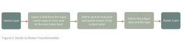
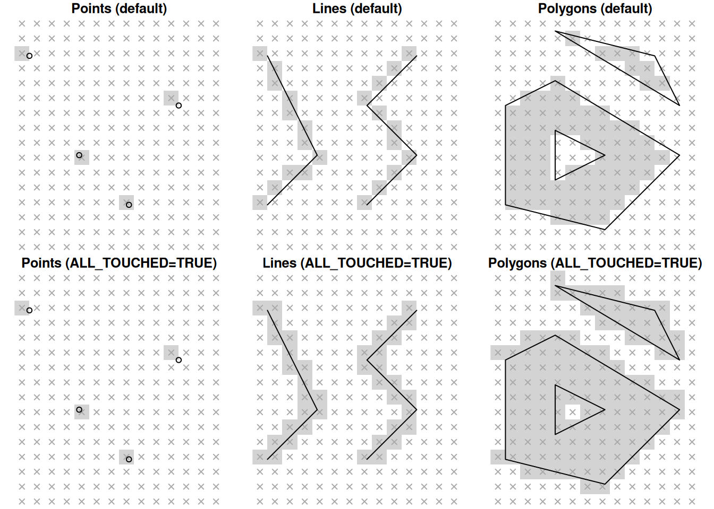
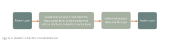

The Nature of Spatial Data
Let’s return to a foundational idea in the last section on spatial ontologies: the GeoAtom. The GeoAtom records phenomena as a combination of where something is space, when it is in time, and what its attributes are1. The GeoAtom reminds us that geography is always both locational and thematic. However, during our discussion of spatial ontologies, we mainly focused on the conceptual side of representation. Of course, simply concieving of processes of objects is not enough when our goal is to introduce those conceptualizations into a computer and perform analyses. If spatial ontologies help structure and organize phenomena, we now need to ask: how are these abstract concepts translated into computational form? In other words, how does a GeoAtom become spatial data?
This week, we will examine how geographic entities are encoded in computers through spatial data models2. As you miay suspect, data models are not neutral. Instead spatial data models operationalize particular assumptions about space, time, objects, and attributes. There are many reasons it is worth looking carefully at spatial data models. Pragmatically, grounding technical implementation in fundamental spatial concepts strengthens research design and methodological clarity in a variety of ways. When choosing a spatial data model, we are not simply choosing a file format. We are committing to particular conceptualizations of space and representations of relationships that shape what kind of analyses become possible and what kinds of distortions or simplifications are introduced into our work.
We will begin by examining the conventional vector and raster models, and then examine transformations between them. We will also explore spatial interpolation and spatial generalization as examples of transformations both within and across models. Finally, we will briefly consider emerging paradigms such as knowledge graphs that expand how spatial relationships can be encoded.
Vector Model Basics
Spatial phenomena can be represented as spatial data in vector or raster form, each with distinct advantages, limitations, and tradeoffs in how data can be stored, analyzed, manipulated, and visualized.
The vector data model aligns naturally with an object-based ontology of space that treats geographic phenomena as discrete entities. It is composed of spatial features that are assigned a geographic location, encoded as either:
- Points: a single coordinate pair representing a specific location (e.g., a monitoring station, a crime event).
- Lines: an ordered list of coordinate pairs representing linear features (e.g., roads, rivers, migration paths).
- Polygons: an ordered list of coordinate pairs where the first and last points coincide, forming a closed boundary (e.g., parcels, census tracts, ecological zones).
Each feature carries associated attribute data describing what it is. Attributes may be quantitative (population, traffic volume) or qualitative (zoning type, land cover category). In GeoAtom terms, vector data explicitly encodes the “where” through geometry and the “what” through attributes. The vector data model is particularly suitable for representing locations or regions as bounded entities that we conceptualize as objects. It also supports representations of the outcomes of processes when those processes are event-based (e.g., disease cases as points, movement trajectories as lines).
Common format of vector data include shapefile, KML/KMZ, CSV, GPX, GeoJSON/TopoJSON, Geodatabase, PostGIS, though each of which has their best use. To make this distinction more concrete, let’s look at a small example from web mapping or data workflows: the differences between JSON, GeoJSON, and JSON-L files. Although these formats may appear similar at first glance, they reflect different approaches to how data are structured, stored, and used.
JSON (JavaScript Object Notation) is a lightweight, text-based data format designed for structured data exchange. JSONs represent information as objects (key–value pairs) and arrays. Because of its simplicity and language-agnostic structure, JSON is widely used for APIs, configuration files, and data transfer between systems. It is general-purpose and not inherently spatial.
{
"name": "Santa Barbara",
"population": 88400,
"tags": ["coastal", "CA"]
}
GeoJSON is a specialized convention built on top of JSON for representing geographic features. GeoJSONs follows a strict structure that includes required fields such as “type”, “geometry”, “coordinates”, and optionally “properties”. In other words, GeoJSON is still JSON, but it encodes spatial information explicitly according to a defined schema. GeoJSON files are commonly used in web mapping libraries such as Leaflet and Mapbox.
{
"type": "FeatureCollection",
"features": [
{
"type": "Feature",
"properties": { "name": "Santa Barbara" },
"geometry": { "type": "Point", "coordinates": [-119.6982, 34.4208] }
}
]
}
JSON Lines is a streaming-friendly variation of JSON in which each line of a file is a separate JSON object. Instead of storing all objects inside a single large array, JSONL writes them sequentially, one per line. This structure is particularly useful for large datasets, logging systems, and data pipelines because it allows incremental reading and processing without loading the entire dataset into memory. JSONL is therefore not conceptually different from JSON, but it reflects a different assumption about scale and workflow
{"id":1,"name":"Santa Barbara","lon":-119.6982,"lat":34.4208}
{"id":2,"name":"Goleta","lon":-119.8276,"lat":34.4358}
Researchers typically transform data between these formats based on specific use cases.
For example, when doing cloud computing, GeoJSON may be converted to JSONL for efficient storage and processing.
When building a web map, JSONL may be converted to GeoJSON for compatibility with mapping libraries.
Below is an example snippet of how this transformation happens in Python using the json library where we download a data set from the cloud, transform it into JSONL format, and then upload it back to the cloud for further analysis:
# Load the data from the GeoJSON file
with open(raw_filename, 'r', encoding='utf-8') as f:
data = json.load(f)
# Write the data to a JSONL file
with open(prepared_filename, 'w') as f:
for feature in data['features']:
row = feature['properties']
row['geog'] = (
json.dumps(feature['geometry'])
if feature['geometry'] and feature['geometry']['coordinates']
else None
)
f.write(json.dumps(row) + '\n')
A few more technical characteristics that influence how vector data performs include:
Indexing, which enables efficient retrieval of spatial features and becomes essential when querying large datasets or performing computationally intensive spatial analysis.
Topology, which encodes spatial relationships such as adjacency or shared boundaries. Topology is crucial when spatial relationships themselves are meaningful
Projections, which determine how locations in abstract geographic space are translated into planar coordinate systems.
Geometric accuracy, which reflects how faithfully boundaries and vertices are preserved. Some representations (e.g., vector tiles) deliberately simplify geometry for performance.
In short, vector representations are especially powerful when modeling discrete, well-defined phenomena. They preserve boundaries, support multiple attributes per feature, and enable complex spatial operations such as buffering, overlay, and network analysis. Because they maintain explicit geometric detail, they often produce visually refined cartographic outputs. At the same time, vector data implicitly assumes that space can be partitioned into discrete objects, which is conceptually aligned with certain spatial ontologies, but not all geographic phenomena conform neatly to that framing.
Raster Model Basics
In contrast to vector formats, which represent space using geometric primitives that are generally resolution-independent, the raster data model represents space as a grid of cells at a defined resolution. At its core, a raster is a matrix composed of regularly spaced rows and columns, where each cell (or pixel) stores a single value. Spatial location is defined implicitly by a cell’s position within the grid rather than through explicit coordinate pairs.
Each pixel in a raster has an associated bit depth, which determines how much information it can store. Standard digital imagery commonly uses 8 bits per color channel (Red, Green, Blue), while scientific datasets such as Digital Elevation Models (DEMs) often rely on 16-bit or 32-bit formats to preserve numerical precision. The choice of bit depth affects the range and accuracy of values that can be represented. Raster data are stored in formats such as PNG, JPG, TIFF, and GIF, though spatial analysis workflows frequently rely on georeferenced formats such as GeoTIFF, which embed coordinate system and projection information. Decisions about resolution, bit depth, and file format are therefore not merely technical but central to analytical design and cartographic workflow.
The three typical file formats that we typically encounter when using the raster data model in a GISystem are JPG, PNG, and TIFF.
JPG stores raster data using lossy compression. Although it still represents the image as a grid of pixels, the pixel values are transformed mathematically and some information is permanently discarded in order to reduce file size. This makes JPG well suited for photographs and web display, where visual appearance matters more than numeric precision. However, because pixel values are altered during compression, JPG is generally inappropriate for analytical raster data.
PNG also stores raster data as a grid of pixels, but it uses lossless compression. The use of lossless compression means pixel values are preserved exactly, and no information is discarded during storage. PNG reduces file size by identifying repeated patterns in the data rather than modifying pixel values. However, PNG typically supports limited bit depth compared to scientific raster formats and does not natively embed geospatial reference information unless accompanied by additional metadata.
For example, below is a neighborhood map represented in two different raster formats: JPG and PNG (Figure 1). Both formats encode the same spatial information and are exported with the same resolution, color scheme, and visual styling. However, if you click to zoom into both images, you will see the line works are handled differently.
Figure 1: A neighborhood map represented in two different raster formats: JPG (left) and PNG (right). The JPG file is 267kb, while the PNG file is 195Kb.
TIFF, and particularly GeoTIFF, functions as a more flexible container format. These formats can store raster data either uncompressed or using lossless compression, preserving pixel values exactly. Unlike JPG and PNG, TIFF supports higher bit depths, which is essential for scientific measurements like digital elevation models or remote sensing data. It is the standard format for analytical GIS workflows where precision and spatial metadata are critical. Exporting the same neighborhood map as a GeoTIFF with 16-bit color depth results in a file size of 5.1Mb.
Rasters are most naturally suited to representing continuous phenomena such as elevation, temperature, precipitation, or reflected electromagnetic radiation. These phenomena align with a field-based ontology of space, in which every location has a value and spatial variation is gradual rather than bounded. Because rasters treat space as a continuous surface sampled at regular intervals, they provide an intuitive structure for modeling surfaces and gradients.
One major advantage of raster storage is computational efficiency. Because spatial coordinates are stored implicitly through grid position rather than explicitly as vertex lists, rasters can require less storage than high-density vector representations of continuous surfaces. As a result, terrain analysis (such as slope, aspect, and hillshade), surface modeling, spatial interpolation, suitability analysis, and many classification workflows are computationally efficient within a raster framework.
Despite these strengths, raster models have important limitations. Unlike vector models, rasters do not explicitly preserve topological relationships, and they do not naturally support multiple attributes per spatial unit without additional data structures. Most raster datasets operate at a single spatial resolution, though multi-resolution pyramids may be constructed to improve visualization performance. Reprojection or resampling typically introduces some degree of data degradation, particularly if transformations are performed repeatedly. For this reason, analytical transformations should ideally be conducted from the original source data rather than through serial processing of intermediate outputs. When raster resolution is coarse relative to the spatial phenomena being represented, a blocky or pixelated appearance can happen.
Vector to Raster Transformation
Because vector and raster data models support different representations of spatial phenomena, and therefore different analytical workflows, GIS professionals frequently need to move between them. Analytical goals often dictate model choice, and conversion becomes a necessary step in computational pipelines.
When researchers we move between the vector and raster data models, they are not simply changing file types. They are also transforming how space is conceptualized. When an object-based representation of space is being translated into a field-based representation, that translation requires rules.
Rasterization, is the process of converting vector points, lines, or polygons into a gridded surface composed of raster cells (Figure 2). The process includes the following key steps:

Point to Raster: At its most fundamental level, a single vector point representing one geographic feature can be converted into a raster cell. The raster cell that contains the point is assigned a value based on the chosen attribute (e.g., tree height, age, event count). This process typically assumes that the cell inherits the value of any point located within it. Complications arise when multiple points fall within the same raster cell. In such cases, the cell value may be assigned using a rule such as most frequent attribute value, mean or sum of values, binary presence (0/1), or count of points3.
Notice what is happening conceptually. During rasterization a discrete event located at an exact coordinate is being aggregated into an area of finite extent. When a point-based representation of place is becoming an area-based summary, the choice of resolution would directly affect this transformation. This makes it not merely a technical step; it is a redefinition of spatial meaning.
Lines to Raster: A vector line representing a linear feature can be converted into a series of adjacent raster cells that approximate its path across the grid. Raster cells are typically assigned the attribute value of the line intersecting each cell. Alternatively, a binary representation (0/1) may be used to indicate the presence or absence of a linear feature. Here, transformation introduces discretization effects. A continuous geometric line must be approximated by square cells. Thus, thin features may become thicker, disconnected, or fragmented depending on resolution. From an ontological perspective, a bounded object defined by precise coordinates is now being translated into a grid-constrained representation.
Polygons to Raster: A vector polygon representing areal features can be converted into clusters of raster cells. Raster cells typically inherit the attribute value of the polygon containing the cell center. However, alternative assignment rules may be used, including majority area containment, partial area weighting, binary presence, and many others. The choice of assignment rule matters, especially along boundaries. Cells that intersect multiple polygons may be forced to adopt a single dominant value, introducing boundary simplification and mixed-pixel effects. Conceptually, this conversion transforms a clearly bounded region into a tessellated surface approximation. The polygon’s exact boundary becomes a stair-stepped edge constrained by grid resolution. Again, resolution governs quality: finer grids better approximate shape, but never perfectly reproduce it.
As an additional note, because vector to raster is an aggregation process, it is not reversible. Once a vector feature is rasterized, the original geometry cannot be perfectly reconstructed from the raster. Also, there is not a single “correct” way to perform rasterization. See the example below (Figure 3) of how different algorithms for rasterization can produce different results. The default algorithm assigns a cell value if the cell center falls within the vector geometry, which can lead to underrepresentation of features that are thin or have complex boundaries. The “ALL_TOUCHED” option, on the other hand, assigns a cell value if any part of the cell intersects the vector geometry, which can lead to overrepresentation and more blocky results. The choice of algorithm therefore reflects different assumptions about how spatial phenomena should be represented when transitioning from discrete objects to continuous surfaces.

Figure 3: Rasterizing points, lines and polygons to raster withst_rasterize in R, using the default algorithms (top) and options="ALL_TOUCHED=TRUE"(bottom). Source
Raster to Vector Transformation
Raster-to-vector conversion, also known as vectorization, is the process of converting gridded cell- or pixel-based data into vector points, lines, or polygons. Where rasterization imposed a grid structure onto discrete objects, vectorization extracts discrete features from a continuous surface (Figure 4). In doing so, vectorization requires rules for boundary detection, cell grouping, and geometry construction. Generally, the process includes the following key steps:

Raster to Points: A raster surface such as a Digital Elevation Model (DEM) can be converted into a set of vector points. Each point represents the centroid of a raster cell containing a valid data value, and the associated attribute table stores both the geographic location and the raster value (e.g. elevation).
Conceptually, this transformation converts an implicitly located grid value into an explicitly located object. What was previously part of a continuous field becomes a collection of discrete spatial observations. The underlying resolution of the raster determines the density of the resulting point dataset. In this sense, the “precision” of the vector points is constrained by the raster sampling interval from which they were derived.
Raster to Lines: Raster surfaces can also be converted into vector lines. Here, a process represented as a surface (flow intensity across cells) becomes a linear object (a stream channel). The geographic accuracy and smoothness of the resulting vector lines depend directly on the spatial resolution of the input raster. Coarse raster resolution may produce angular or stair-stepped line geometries, while finer resolution allows closer approximation of continuous features. Again, the ontology shifts here is that a field describing process intensity is being converted into a bounded object suitable for object-based analysis.
Raster to Polygons: Raster surfaces can certainly be converted into polygons, particularly when representing categorical data. For example, a land cover classification raster can be vectorized into polygons representing different land type categories. This allows GIS professionals to calculate areal coverage, perform spatial joins, and integrate the results into workflows that rely on object-based analysis. During conversion, adjacent cells with identical values are grouped into contiguous regions and represented as polygons. However, because raster boundaries are constrained by the underlying grid, the resulting polygon edges may appear stair-stepped, especially if the raster resolution is low.
This highlights an important point: vectorization does not restore the “true” boundary of a feature. It reconstructs an object from a discretized field. The geometry of the output polygons reflects the sampling structure of the raster. Resolution, therefore, shapes not only visual appearance but also the conceptual boundaries of place.
To illustrate raster-to-vector transformation in a familiar context, consider the process of converting a raster photograph into vector artwork (Figure 5). Starting with the same raster image of a leaf, different tracing presets, such as High Fidelity Photo, Sketched Art, or Black and White Logo, produce different vector outputs. The High Fidelity option attempts to preserve subtle color gradients and fine details by generating a large number of vector paths, resulting in a dense and complex representation. In contrast, the Sketched Art or Black and White settings simplify tonal variation, reduce the number of paths, and abstract the image into broader regions or silhouettes. Although each output is derived from the same underlying raster grid, the resulting vector geometries differ in complexity, smoothness, and semantic interpretation.

{kind=link}
{kind=link}
{kind=link}
Figure 5: Raster to vector transformation of a leaf image using different tracing presets in Adobe Illustrator.
Spatial Interpolations
When discussing transformation, it is also useful to move beyond format conversion and consider transformations at a higher representational level. Vectorization and rasterization change data structure, but spatial interpolation and spatial generalization change the meaning and structure of representation itself.
-
Spatial interpolation is a mathematical process used to estimate values at locations where no data have been collected. In doing so, it makes an ontological move by assuming that the phenomenon being measured varies across space in a structured way. As an example, advanced vector-to-raster conversions frequently rely on interpolation techniques to estimate raster cell values from vector point measurements. Interpolation methods can be classified as deterministic or geostatistical, and as global or local in scope.
-
Deterministic methods derive raster surfaces based on predefined assumptions about spatial context, such as distance decay or surface smoothness. These methods do not explicitly model uncertainty.
-
Geostatistical (or stochastic) methods, in contrast, explicitly incorporate spatial dependence. They model spatial autocorrelation among measured values and provide estimates of prediction uncertainty. In other words, they treat spatial structure as something to be quantified rather than assumed.
-
Global interpolation methods use all available data points to estimate values across the entire study area. This typically results in smoother surfaces and emphasizes broad spatial trends.
-
Local interpolation methods estimate values using subsets of nearby points. This neighborhood-based approach often better captures localized variation and spatial heterogeneity but may introduce discontinuities or boundary effects.
A few more examples that illustrate these above approaches include:
-
Inverse distance weighting (IDW), which estimates a raster cell value using a weighted average of nearby input data points. Points closer to the prediction location exert greater influence than those farther away. IDW is intuitive and easy to implement and works well when data are relatively homogeneously distributed. However, IDW can over-smooth surfaces and generate artifacts in areas with high spatial variability.
-
Natural neighbor (NN), which identifies nearby input points using a Voronoi tessellation and assigns weights based on proportional areas. It is computationally efficient and capable of modeling complex spatial relationships, but may struggle when input data are sparse or poorly distributed.
-
Spline interpolation, which fits a mathematical function to the input data points that both minimizes overall surface curvature and passes directly through the measured values. Splines work well for highly variable or complex spatial patterns, but can introduce over- or under-fitting when data are sparse.
Polynomial interpolation, which fits a single mathematical function across the entire dataset (global) or multiple functions across defined neighborhoods (local). This approach is effective for identifying long-range spatial trends and processes but is sensitive to outliers and neighborhood specifications.
Note that there is no single “best” interpolation method. Each embodies different assumptions about spatial continuity, smoothness, and scale. Choosing a method therefore means choosing a representation of process (how change should unfold across space).
If you would like to see an example of spatial interpolation in action, check out the above interactive map comparing the error surfaces of different interpolation methods applied to a dataset.
Spatial Generalization
Spatial generalization, on the other hand, is the process of simplifying geographic data to make it suitable for a specific map scale or purpose. It involves abstracting reality so that spatial patterns remain legible rather than visually overwhelming. While closely associated with cartography, which we will explore further in future lessons, generalization is also fundamentally about representation and scale.
Generalization modifies map content in a purposeful, measured, and coordinated manner. It is a contradictory process shaped by multiple constraints and tradeoffs. On one hand, generalization enhances usability. Reducing detail and complexity improves readability and interpretive clarity. It lowers cognitive load, which is crucial given the limitations of human visual perception. On the other hand, generalization inevitably removes information. Feature detail is lost, albeit intentionally and systematically. This can influence the kinds of knowledge that maps support. In ontological terms, generalization reshapes what counts as a meaningful object or boundary at a given scale. A river may shift from a polygon to a line. A dense neighborhood may shift from many houses to a single representative symbol. Scale changes the ontology of place.
Below are several typical transformations under generalization:
Simplification removes non-essential vertices from lines or polygons while preserving overall shape. Algorithms such as Douglas–Peucker are commonly used for cultural features like roads, while Wang–Müller is often better suited to natural features such as rivers.
Smoothing adjusts vertex positions to create a more visually flowing shape, reducing angularity introduced by simplification.
Collapsing changes dimensionality as scale decreases, for example, converting a river polygon into a centerline, or representing a city area as a point.
Selection determines which features are retained based on map purpose. It functions as the entry point for all other generalization processes.
Typification reduces feature count while preserving pattern. For instance, representing 100 houses with 10 representative symbols to convey density.
Aggregation merges nearby discrete features into a larger unit, such as combining buildings into a single urban area polygon.
Displacement slightly shifts overlapping features to maintain visibility at smaller scales.
Exaggeration and Enhancement enlarges or emphasizes important features so they remain visible and interpretable.
In this sense, interpolation and generalization together demonstrate that spatial data are not static containers of truth. They are structured representations shaped by assumptions about continuity, boundary, scale, and process.
Moving Towards New Data Models
Are vector and raster the only ways to represent geographic information?
For decades, these two models have dominated GIS because they efficiently encode geometry whether being points, lines, polygons, and grids. But as spatial data become increasingly interconnected, distributed, and multi-source, new representational needs have emerged. In particular, the challenge is no longer just how to store geometry, but how to encode relationships, meaning, and knowledge. This is where Geospatial Knowledge Graphs (GeoKGs) may enter the conversation.
A knowledge graph organizes information as a network of entities and relationships. Instead of structuring data primarily around geometric primitives (as vector and raster do), knowledge graphs structure data around concepts and connections.
In a graph structure, nodes represent entities (places, events, organizations, people, features), edges represent relationships between entities, then ontologies define the types of entities (classes) and relationships (properties), allowing machines to interpret meaning rather than just store values.
A Geospatial Knowledge Graph becomes geospatial when spatial references and spatial relationships are explicitly encoded within this graph structure. For example, a standard knowledge graph might store the fact that the Eiffel Tower is an iconic landmark. A GeoKG extends this by encoding:
- That the Eiffel Tower has a geometry.
- That it is located within Paris.
- That Paris is located within France.
Because these relationships are formally defined using ontologies such as GeoSPARQL, a GISystem incorporating them could perform logical reasoning. If it knows that “Paris is the capital of France” and “The Eiffel Tower is in Paris,” it may be possible to infer that “The Eiffel Tower is in France” without explicit manual linkage.
As we connect this to spatial ontologies, we may see that vector and raster models operationalize space geometrically through objects and fields. GeoKGs, in contrast, operationalize place and process through semantic relationships. Place becomes a node with attributes and hierarchical relationships. Process can be encoded as temporal or causal relationships between nodes. Space becomes one type of relationship among many. Therefore, rather than simply asking “Where is it?” and “What geometry does it have?”, GeoKGs also ask “How is it connected?” and “What does it belong to?”. In this sense, GeoKGs extend the GeoAtom idea.
Reference:
Vector Formats and Sources. In UCGIS Body of Knowledge. https://gistbok-topics.ucgis.org/CV-02-003
Raster Formats and Sources. In UCGIS Body of Knowledge. https://gistbok-topics.ucgis.org/CV-02-020
Vector-to-Raster and Raster-to-Vector Conversions. In UCGIS Body of Knowledge. https://gistbok-topics.ucgis.org/DM-06-086
Point, Line, and Area Generalization. In UCGIS Body of Knowledge. https://gistbok-topics.ucgis.org/DM-06-085